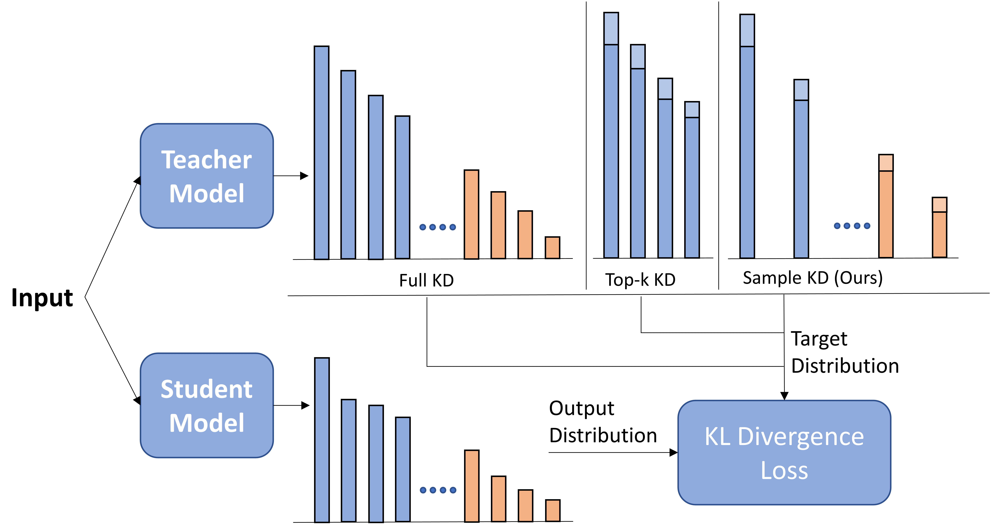
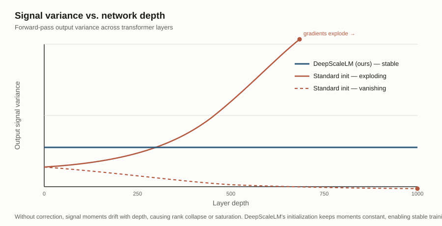

About
I'm a research engineer at Samsung Research's NLP Lab in Seoul. I work on training large language models and on-device models for Galaxy AI — running training jobs, reading evaluation curves, and figuring out why certain training choices help or hurt.
Lately that's meant taking deep dives into understanding and simplifying tokenizers, knowledge distillation, and signal propagation in deep transformers. I did a Master's in Computer Science at Georgia Tech, and studied Electrical Engineering (minor in CS and Cognitive Science) at IIT Kanpur.
Over the years I've worked on question answering, machine translation, and speech translation, and for the last four years I've been focused on LLM training.
Featured research
ACL 2025 · Oral
Sparse Logit Sampling: Accelerating Knowledge Distillation in LLMs
Anshumann*, Mohd Abbas Zaidi*, Akhil Kedia*, Jinwoo Ahn, Taehwak Kwon, Kangwook Lee, Haejun Lee, Joohyung Lee

Knowledge distillation is much cheaper if you can pre-compute and cache the teacher's output logits once, rather than running the teacher live during every student training step. The obvious way to keep that cache small — storing only the teacher's top-K probabilities per token — turns out to be biased: it systematically distorts the target distribution the student learns from, hurting both accuracy and calibration. We prove this formally, then propose an importance-sampling scheme that gives the student an unbiased estimate of the full teacher distribution while storing as few as 12 logits per token. It preserves the gradient in expectation and matches full-distribution distillation quality at a fraction of the storage and compute cost, making distillation practical at pretraining scale.
Paper (arXiv)
ACL Anthology
ICML 2024
Transformers Get Stable: An End-to-End Signal Propagation Theory for Language Models
Akhil Kedia*, Mohd Abbas Zaidi*, Sushil Khyalia*, Jungho Jung, Harshith Goka, Haejun Lee

Transformers are hard to scale in depth: stack enough layers and training runs into vanishing or exploding gradients, rank collapse, and attention scores that saturate. We derive a unified theory for how the moments of the forward and backward signal evolve layer by layer through a transformer, which lets us pin down exactly where and why these failure modes appear. From that theory we build DeepScaleLM, an initialization and scaling scheme that keeps output and gradient moments constant with depth. It makes training genuinely deep transformers — up to 1000 layers — stable, and models trained this way outperform shallower ones with the same parameter count on language modeling, speech translation, and image classification.
Paper (arXiv)
ICML page
Code
EMNLP 2022
FiE: Building a Global Probability Space by Leveraging Early Fusion in Encoder for Open-Domain Question Answering
A. Kedia, M. A. Zaidi, H. Lee

Open-domain QA systems typically retrieve a set of candidate passages and score each one mostly in isolation, so the model never gets a real global view of how evidence across documents relates. FiE fuses information from multiple retrieved documents early, inside the encoder itself, so the model builds one shared probability space over all the evidence rather than reconciling separate per-document scores after the fact. This gives more consistent, better-calibrated answer predictions when the right evidence is spread across several passages.
Paper (arXiv)
EMNLP
Interspeech 2022 · Oral
Cross-Modal Decision Regularization for Simultaneous Speech Translation
M. A. Zaidi*, B. Lee*, S. Kim, C. Kim

Simultaneous speech translation has to keep deciding, word by word, whether to READ more of the incoming audio or WRITE out the next word of the translation — and getting that call wrong trades off latency against quality. This work regularizes those READ/WRITE decisions using cues from a simultaneous text translation model, transferring the more reliable segmentation signal that text models can learn to the speech setting. The result is a better latency–quality trade-off than training the speech policy on its own.
Paper (arXiv)
ISCA
ICASSP 2021
Task Aware Multi-Task Learning for Speech to Text Tasks
S. Indurthi*, M. A. Zaidi*, N. Kumar, B. Lee, H. Han, S. Ahn, S. Kim, C. Kim, I. Hwang

A single encoder-decoder can in principle learn ASR, speech translation, and machine translation together, but naively multi-tasking these tends to blur the task-specific behavior each one needs. We add a task modulation network that conditions the shared model on which task it's currently solving, letting one network learn all three jointly without the tasks interfering with each other, and without the cost of training and serving separate models.
ICASSP
ACL-IWSLT 2020
End-to-End Simultaneous Translation System for IWSLT2020 Using Modality Agnostic Meta-Learning
H. Han, M. A. Zaidi, S. Indurthi, N. Kumar, B. Lee, S. Kim

Our submission was the only fully end-to-end simultaneous speech translation system at IWSLT 2020, built using modality-agnostic meta-learning to share structure between the speech and text modalities rather than pipelining separate ASR and MT components. It came out as the best-performing system in the low-latency regime of the shared task.
Paper